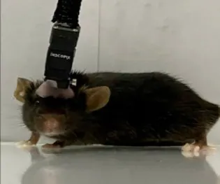
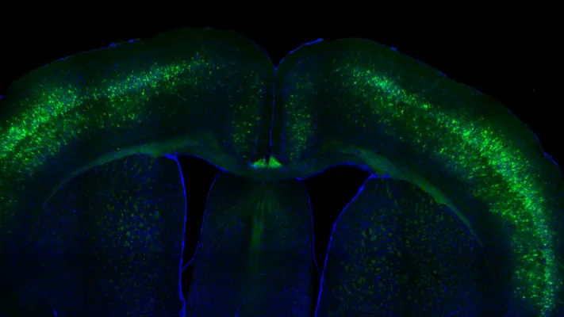
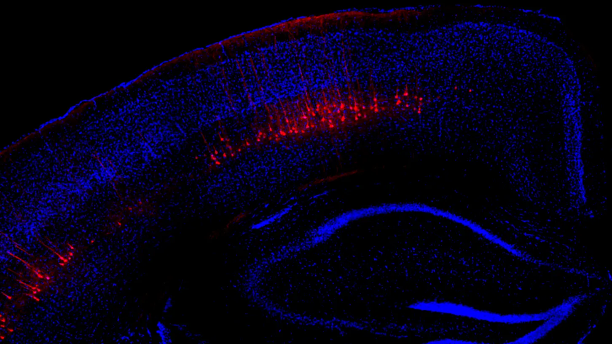

Dr Hasan Mohammad
Indian Institute of Science Education and Research (IISER), Mohali




No Garland Neuroscience is designed as a student-first platform where participants can present their work, receive constructive feedback, and refine their ideas through direct discussion with peers, postdocs, and faculty mentors. NGN 2026 is hosted jointly by NABI and IISER Mohali.
No Garland Neuroscience (NGN) started in 2017 as a scientist-first conference format that prioritized real scientific discussion, openness, and mentorship over ceremonial structure. Across editions, NGN has become a platform where students, postdocs, and faculty engage deeply through talks, posters, and collaborative conversations.
Regular registration ends on 15 September. Register now for NGN 2026 talks and poster presentations; abstract submission details will be shared with registered participants.